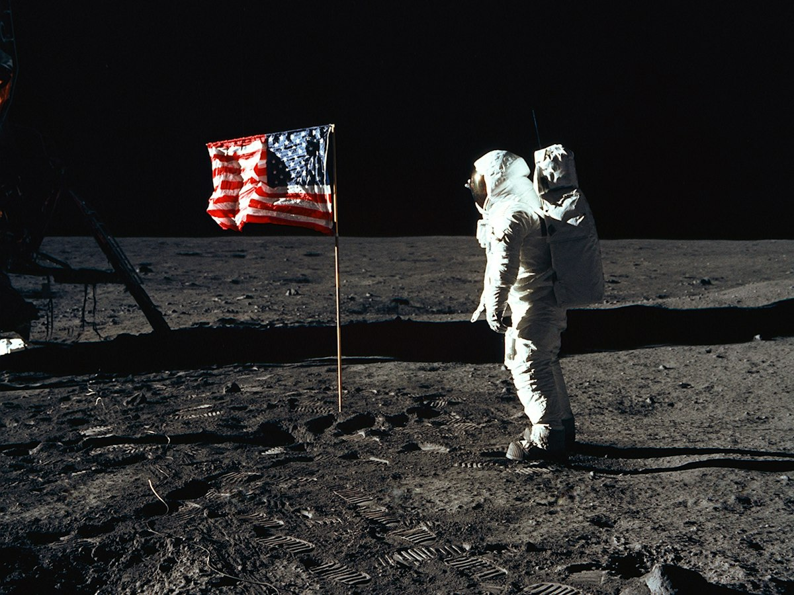

NASA Built A Dangerous Cage To Train Apollo Moon Landers
On October 30, 1964, a steel-framed truss lifted off the desert floor to solve a mechanical problem that threatened the entire lunar program.

On October 30, 1964, a strange aluminum cage took its first test flight at Edwards Air Force Base in California. This apparatus, known as the Lunar Landing Research Vehicle, was designed to simulate the precarious physics of landing a spacecraft on the moon. Engineers realized early that training pilots for zero atmosphere and one-sixth gravity required an entirely new machine. Without this ungainly skeletal frame, the Apollo lunar module might have remained an uncontrollable liability during the final descent phase.
The Thesis of Empirical Risk
The thesis guiding our analysis is that clumsy test platforms often outperform elegant computer simulations when engineers face unknown gravitational thresholds. Critics argue that mathematical modeling could have bypassed the extreme hazards of flying a prototype prone to catastrophic failure. However, equations alone fail to account for the chaotic vestibular reactions of human pilots operating under unfamiliar thrust ratios. The vehicle proved that physical friction and real danger remain indispensable teachers in aerospace design.
A single error in a simulation is a line of code; a single error in a research vehicle is a crater. This fundamental difference dictated the development path for the entire lunar program. NASA chose to risk pilots to avoid risking the mission's eventual success.
Mechanical Imitation of Lunar Gravity
Building an aircraft that mimics lunar gravity on Earth requires ignoring every traditional aerodynamic rule in the textbook. The machine relied on a vertically mounted General Electric turbofan engine to counteract five-sixths of its actual weight continuously. Hydrogen peroxide lift rockets adjusted the remaining inertial forces while the pilot fought the attitude controls. It looked less like an airplane and more like an overturned iron bedstead hauled aloft by a roaring blowtorch.
The pilot sat inside a frame that offered zero protection from the elements or the engine's heat. Unlike modern cockpits, there was no enclosure to shield the operator from the sheer noise of the turbofan. This design choice emphasized functionality over human comfort, treating the pilot as just another component in the feedback loop. The machine was a tool, not a vessel.
The Reality of Flight Control
Test pilots frequently described the experience as wrestling a greased pig inside a burning barn. The machine possessed zero aerodynamic stability and demanded constant manual corrections just to maintain a level hover. Every gust of desert wind threatened to flip the open cockpit over before the stabilization system could compensate. This harsh operational reality exposed the limits of theoretical orbital mechanics long before anyone left Earth orbit.
The controls were notoriously sensitive to the slightest muscle twitch. Because the vehicle operated in a state of near-weightlessness, the inertia of the pilot's own limbs could induce unwanted pitch or roll. This necessitated a specialized type of hand-eye coordination that traditional flight training did not provide. Pilots had to learn to fight the physics of their own bodies as much as the machine itself.
The Legacy of the 1964 Flight
Despite its terrifying reputation among flight crews, the data gathered from those early Edwards hops directly shaped the Apollo training program. NASA eventually built several Lunar Landing Training Vehicles based on the original 1964 design for astronaut practice. Neil Armstrong famously credited his survival during the Apollo 11 landing to the muscle memory he built in those exact simulators. The strange truss framework absorbed the unpredictable kinetic variables that slide rules could never quite capture.
Training was not merely about learning to fly, but about learning to fail safely. By crashing a research vehicle in the California desert, NASA learned how to prevent a crash on the lunar surface. The vehicle turned potential catastrophes into manageable data points. This transfer of knowledge was the true engine of the lunar landing success.
The Engineering Disconnect
Historians often overlook the sheer mechanical stubbornness required to force such a flawed concept into operational service. Modern aerospace engineering tends to favor exhaustive digital redundancy over dangerous proof-of-concept hardware like the research vehicle. Yet the fundamental gap between atmospheric flight and vacuum descent resists clean digital abstraction entirely. Machines must still collide with reality before humans can conquer a foreign horizon.
We often assume that progress is a linear climb of increasing precision. In reality, progress is frequently a series of violent corrections. The Lunar Landing Research Vehicle was one of those violent corrections, forced into existence by the limits of contemporary mathematics. It bridged the gap between the known atmosphere and the unknown vacuum.
The Missing Metrics of the Program
What remains undocumented in official archives is the precise psychological toll the project exacted on its ground crews. We do not know the exact budgetary cost overruns or the specific repair hours logged after minor crashes occurred. Those unrecorded metrics vanish into the administrative margins of early spaceflight history. Still, the surviving flight logs confirm that persistence outweighed design perfection every single time.
There is also the question of how many near-misses were omitted from the public record to maintain program momentum. While the primary goal was data, the secondary goal was often political stability. We cannot know how much the safety margins were stretched to meet launch windows. The true cost of the program includes many unseen human and financial stresses.
A Lesson for Modern Designers
Engineers today should examine this machine whenever they are tempted to trust a purely digital simulation. Physical testing imposes a tax of sweat and twisted metal that no software suite can replicate. The clumsy cage from October 1964 remains a monument to empirical humility in the face of the cosmos. Designers ignoring that lesson usually discover their mistakes only after the spacecraft hits the dirt.
The machine was not meant to be beautiful or even safe by modern standards. Its purpose was to be honest about the difficulty of the task ahead. If a simulator cannot make a pilot sweat, it is likely not simulating the truth. True mastery comes from surviving the machine.
Test.